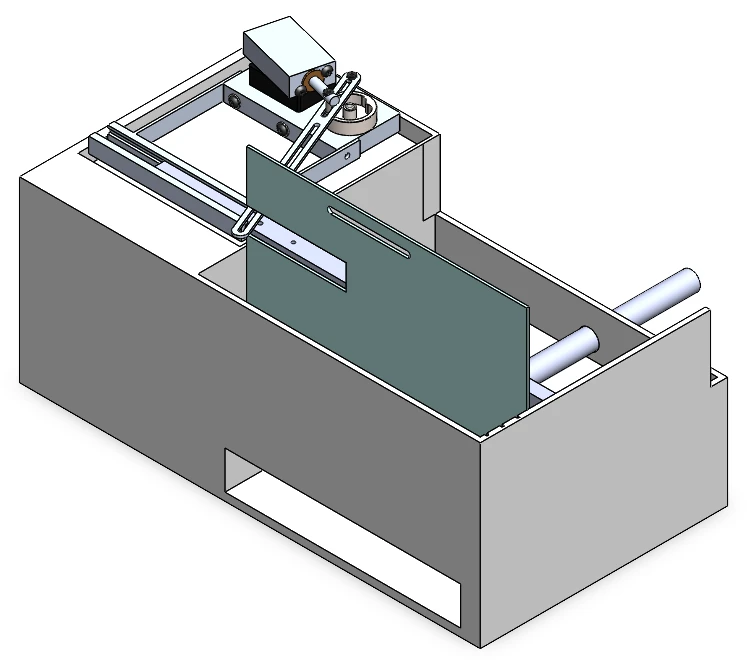

PROJECT 02 / Mechanism design · Manufacturing planning
Turning rotation into a slicing stroke.
I designed a fruit-slicer attachment powered by an existing air engine, using a slotted-lever quick-return mechanism.

01 / THE PROBLEM
Design requirements.
I was provided with an existing air-engine design and tasked with designing a fruit slicer powered by it. My design needed to convert the engine’s rotation into a guided cutting stroke with adjustable slice thickness.
02 / MY ROLE
My contribution.
I designed the slicer attachment: the slotted linkage, guideways, blade carriage, blade clamp, food holder, and adjustable feed arrangement. I also selected materials, planned manufacturing methods, and estimated parts costs.
03 / DESIGN PROCESS
My design process.
- 01
Drive the cutting stroke
I used the flywheel’s crank pin to drive a slotted lever about a fixed pivot. A second slot drives the blade-carriage pin, converting the lever’s rocking motion into a specified 5-inch reciprocating stroke.
- 02
Guide the blade and set slice thickness
I designed rectangular guideways to constrain the carriage and a clamp to locate the blade. A food pusher feeds the fruit from behind the housing wall; an adjustable wall sets how far the fruit enters the blade path.
- 03
Plan manufacture and assembly
I selected 6061 aluminum for the guideways and linkage, Delrin for the carriage, PETG for the holder and base, HDPE for feed components, and stainless steel for the blade. The guideways mount to the existing engine base to establish alignment.
Tools & materials
- SOLIDWORKS
- Concept sketches
- 6061 aluminum
- Delrin
- PETG
- Stainless steel
Design challenges
I considered carriage alignment, blade retention, material selection, and separation of hands from the cutting region. Operating safety and food-contact suitability would need validation before use.
04 / RESULTS & STATUS
Results & status.
I developed a component specification and manufacturing plan with an estimated parts cost of $86.64. The 5-inch blade stroke is a design specification; this case study covers the proposed mechanism.
05 / PROJECT GALLERY
A closer look.
Explore the project views below. Select an image to enlarge it.
About these views
The gallery contains static views. Select an image to see it at a larger size.
Project scope
I designed the fruit-slicer attachment around a supplied air engine. My work covers the slicing mechanism and its integration with that engine; this project remains a proposed design.
Project downloads
Project downloads are not currently available.